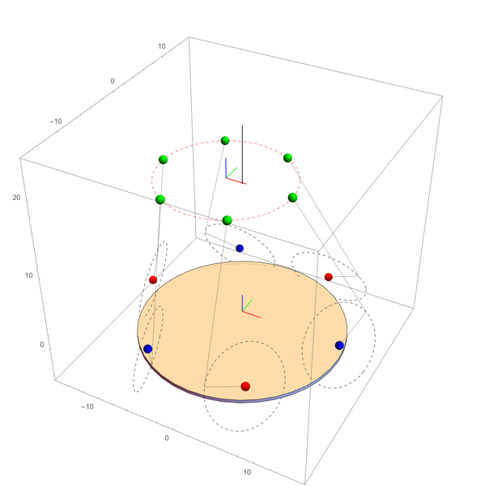

Realization of a 3D printer plate based on 6-DOF Stewart platform
Aim of this project was to design and build a plate for 3D printers using a 6-DOF rotary Stewart platform.
Such plate will be able to not only translate along x, y and z axes, but also perform roll, pitch and yaw rotations,
in order to reduce the use of supports for parts without proper layers under them.
In order to obtain steep inclination angles, magnets were used instead of normal rod ends.
The figure below depicts the roadmap with all the steps of the project.
Step 1: Mathematica
Mathematica symbolic calculus was a helpful tool to compute platform inverse kinematics closed form. The combination between symbolic and closed form equations lets you change platform parameters without the need to evaluate solutions many times, in order to easily simulate different configurations.

{kind=link}
{kind=link}
Step 2: Creo Parametric
Creo Parametric was used as 3D modeling program and every single piece was designed and drawn.
The physical realization of all parts were performed using two kinds of CNCs, a wood laser
cutter and three 3D printers with different extruders sizes.
Step 3: electronics
The electronics consists of an external power supply, an Arduino UNO board, a 680μF capacitor and a servo shield.
This last component is directly connected to six "monster torque" servo motors.
Below is the Stewart platform final prototype.

Step 4: coding
Code consists of two interconnected scripts: the one running on PC is written in Python, while the other in C, as it has to run on Arduino.
They are connected each other through a serial port and exchange data.
Python code has to initialize the connection with Arduino and, once established, it reads desired values for coupler, computes
angles values and PWM frequency and sends them to Arduino.
Then waits for a reply to know that all was fine during communication.
Arduino at first waits for connection, receives frequencies values and transmits them to motors.
Lastly it sends a reply to Python code as a feedback.
Step 5: trajectory planning
The main idea behind platform trajectory planning is to exploit all 6 DOF in order to facilitate, by translating and rotating the plate, the printing of pieces with undercuts, for example a truncated cone from the minor to the major base.
